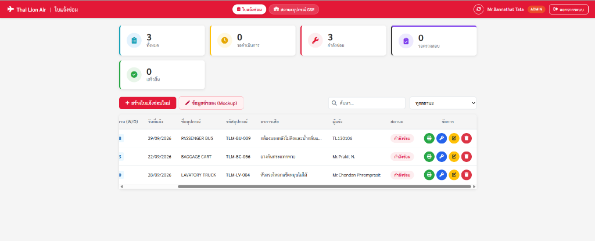

ส่วนที่ 1: ขั้นตอนการดูสถานะงาน การค้นหา และการกดบันทึกผลซ่อมในหน้าจอหลัก (Dashboard)

TLM-BU-009) หรือเลข W/O ในช่อง "ค้นหา..." เพื่อเจาะจงใบงานของคันที่ซ่อม
| ปุ่มไอคอน | ชื่อการทำงาน | สถานะที่แสดง | หน้าที่และคำแนะนำสำหรับช่าง |
|---|---|---|---|
| 🔧 บันทึกผลการซ่อม | บันทึกผลการซ่อมบำรุง | กำลังซ่อม | ปุ่มหลักที่ช่างต้องกด! เพื่อเข้าสู่หน้าต่างกรอกผลซ่อม, เวลาที่ใช้ และรายการอะไหล่ |
| 🔄 รีเซ็ตใบงาน | ดึงกลับ / รีเซ็ตใบงาน | รอ Supervisor ตรวจสอบ | กดเมื่อคีย์ผิด! ดึงใบงานกลับมาเป็น "กำลังซ่อม" เพื่อแก้ไขใหม่ (ก่อนหัวหน้างานอนุมัติ) |
| 🖨️ พิมพ์ใบงาน | พิมพ์ / ดูเอกสาร PDF | ทุกสถานะ | คลิกเพื่อเปิดดูรายละเอียดใบแจ้งซ่อม หรือสั่งพิมพ์เอกสารออกมาเป็นกระดาษ/PDF |
เมื่อคลิกปุ่มประแจ 🔧 หน้าต่างนี้จะปรากฏขึ้น ให้ช่างตรวจสอบและกรอกข้อมูลตามป้ายกำกับหมายเลข ❶ - ❽
| # | ชิ้นส่วนอะไหล่ | Part No. | ชนิด/รุ่น | จำนวน | |
|---|---|---|---|---|---|
| 1 | CAMERA SIGNAL CONNECTOR 4-PIN | CON-CAM-04 |
WATERPROOF | 1 ชุด | 🗑️ |
| 2 | BATTERY DISTILLED WATER (น้ำกลั่น) | DIST-WATER-1L |
STANDARD | 2 ขวด | 🗑️ |
รายละเอียดช่องข้อมูล ❶ - ❽, การดึงกลับใบงาน (Reset), กรณีส่งกลับแก้ไข (Rework) และแผนพัฒนาระบบ
| ลำดับ | ชื่อช่องในแบบฟอร์ม | ประเภทการกรอก | คำแนะนำและวิธีการบันทึกงานซ่อม |
|---|---|---|---|
| ❶ | รายละเอียดการซ่อมบำรุง * Maintenance Details |
🔴 จำเป็นต้องกรอก | บันทึกให้ครบ 3 ส่วน: 1. สาเหตุที่พบ (Root Cause) • 2. การลงมือแก้ไข (Action Taken) • 3. ผลทดสอบหลังซ่อม (Functional Test) |
| ❷ | 1. ช่างผู้รับผิดชอบหลัก * Action By 1 |
🔒 ดึงจากบัญชีช่าง | ระบบดึง ชื่อและรหัสพนักงานของช่างที่ล็อกอิน ให้อัตโนมัติ เพื่อยืนยันตัวตนผู้รับผิดชอบงาน |
| ❸ | 2. ช่างร่วมงาน (คนที่ 2) Action By 2 |
ตัวเลือกเพิ่มเติม | เลือกช่างร่วมปฏิบัติงานคนที่ 2 จาก Dropdown (ถ้ามี หากทำคนเดียวให้เว้นว่างไว้) |
| ❹ | 3. ช่างร่วมงาน (คนที่ 3) Action By 3 |
ตัวเลือกเพิ่มเติม | เลือกช่างร่วมปฏิบัติงานคนที่ 3 จาก Dropdown (ถ้ามี ระบบรองรับบันทึกสูงสุด 3 ท่าน) |
| ❺ | วันเสร็จ (Complete Date) * Complete Date |
🔴 จำเป็นต้องกรอก | ระบุวันที่ดำเนินการซ่อมและทดสอบเสร็จสิ้นจริง (วว/ดด/ปปปป) |
| ❻ | เวลาเสร็จ (Complete Time) * Complete Time |
🔴 จำเป็นต้องกรอก | ระบุเวลาที่ซ่อมเสร็จและทดสอบพร้อมใช้งานจริง (ชั่วโมง:นาที) |
| ❼ | เวลาที่ใช้ซ่อมจริง * Actual Repair Time |
🔴 จำเป็นต้องกรอก | ระบุเวลาที่ใช้ซ่อมจริง เช่น 2 ชม. หรือ 1 ชม. 30 นาที เพื่อใช้คำนวณ Man-Hours |
| ❽ | รายการอะไหล่ที่เปลี่ยน Spare Part Replace |
กรอกตามจริง (ถ้ามี) | คลิก "+ เพิ่มรายการอะไหล่" เพื่อระบุ: ชื่อชิ้นส่วน, Part No., ชนิด/รุ่น และจำนวน (สูงสุด 4 รายการ) |
• การติดตามงานในปัจจุบัน: ให้ช่างติดตามใบงานที่ได้รับมอบหมาย สถานะการตรวจรับรอง และสถานะความพร้อมของอุปกรณ์ GSE ทั้งหมดผ่านทาง หน้าตาราง Dashboard ของระบบเป็นหลัก
• การแจ้งเตือนอัตโนมัติ (ในอนาคต): ในอนาคตระบบจะมีการพัฒนารองรับระบบการแจ้งเตือนอัตโนมัติ (เช่น ผ่านทาง LINE Notification หรือข้อความแจ้งเตือน) เพื่อแจ้งเตือนช่างเมื่อมีงานซ่อมใหม่เข้ามา และแจ้งเตือนหัวหน้างานเมื่อซ่อมเสร็จสิ้น เพื่อเพิ่มความสะดวกรวดเร็วในการประสานงานยิ่งขึ้น